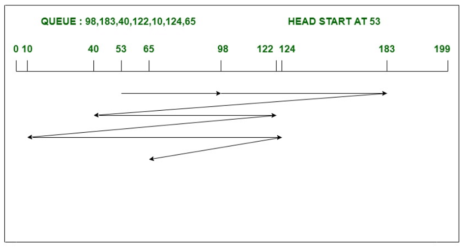
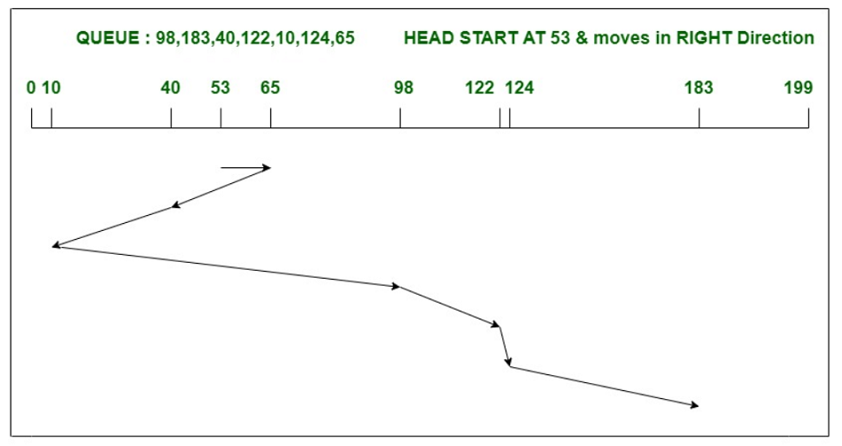
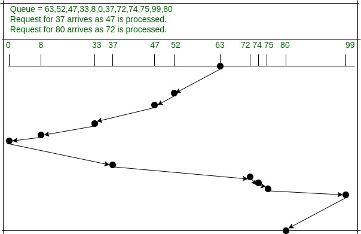
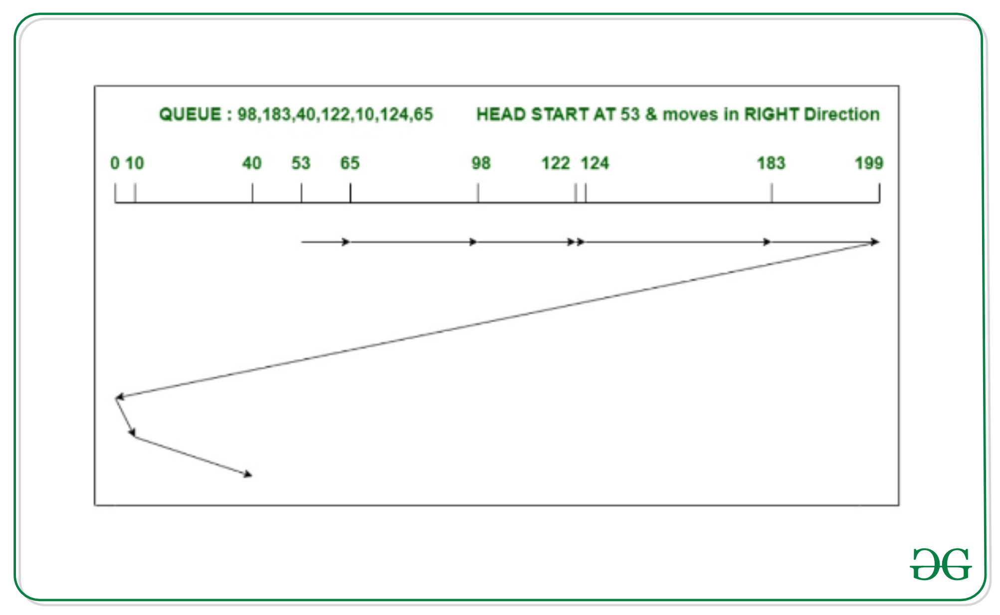
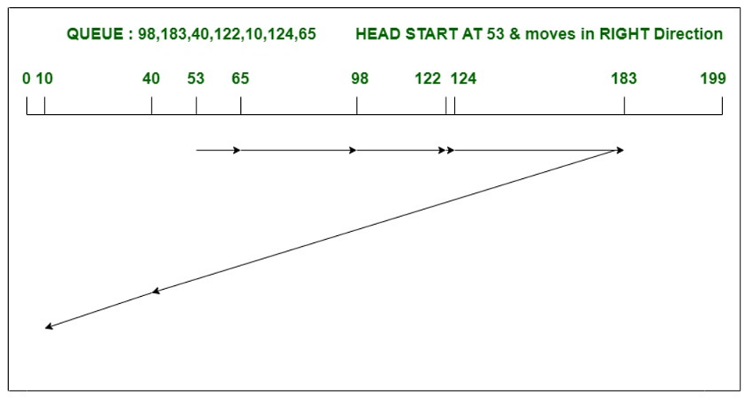
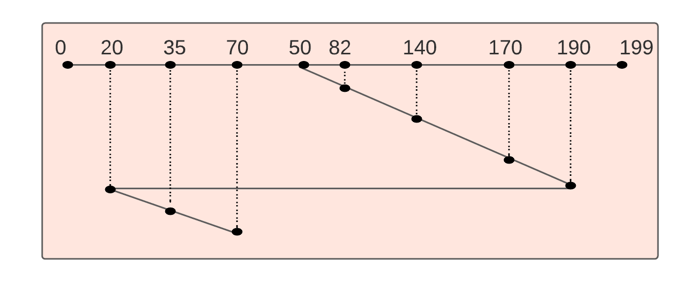

💽 Disk Scheduling – Complete Notes (Operating Systems)
1. What is Disk Scheduling?
Disk Scheduling is the technique used by the Operating System to decide the order in which disk I/O requests are serviced.
👉 Goal: Minimize head movement, reduce seek time, and improve disk throughput.
2. Why Disk Scheduling is Needed?
- 🧠 Disk is very slow compared to CPU
- 📥 Multiple I/O requests come at the same time
- 🧭 Random head movement increases seek time
👉 Efficient scheduling = better system performance
3. Important Disk Time Terms (GATE Must-Know)
- ⏱️ Seek Time – Time taken by disk head to move to required track
- 🔄 Rotational Latency – Time waiting for desired sector to rotate under head
- 📦 Transfer Time – Time to transfer data
Total Disk Access Time:
Seek Time + Rotational Latency + Transfer Time
👉 Seek time dominates, so disk scheduling focuses on minimizing it.
4. Disk Scheduling Algorithms (GATE Focus)
4.1 FCFS (First Come First Serve)
Working:
- 📥 Requests are served strictly in the order in which they arrive.
- ❌ No sorting or reordering of requests is done.
What to Calculate in Numericals:
- 🔁 Head movement sequence
- ➕ Total head movement = sum of absolute differences
- ➗ Average head movement = (total movement / number of requests)

Given:
- 📌 Request Queue:
98, 183, 40, 122, 10, 124, 65
- 📌 Initial Head Position:
53
Step 1: Head Movement Sequence
53 → 98 → 183 → 40 → 122 → 10 → 124 → 65
Step 2: Individual Head Movements
| Movement |
Calculation |
Distance |
| 53 → 98 |
98 − 53 |
45 |
| 98 → 183 |
183 − 98 |
85 |
| 183 → 40 |
183 − 40 |
143 |
| 40 → 122 |
122 − 40 |
82 |
| 122 → 10 |
122 − 10 |
112 |
| 10 → 124 |
124 − 10 |
114 |
| 124 → 65 |
124 − 65 |
59 |
Step 3: Total Head Movement
45 + 85 + 143 + 82 + 112 + 114 + 59 = 640 tracks
Final Answer:
- ✅ Total Head Movement = 640 tracks
- ➗ Average Head Movement =
640 / 7 ≈ 91.4 tracks
Advantages:
- ✅ Very simple to understand and implement
- ✅ No starvation (every request is eventually served)
Disadvantages:
- ❌ Large and unnecessary head movement
- ❌ Poor average seek time
- ❌ Low performance under heavy load
📌 GATE Note:
- Often used as a baseline for comparison
- Usually gives the highest total head movement among all algorithms
- Mostly asked to check basic understanding
4.2 SSTF (Shortest Seek Time First)
Working:
- 🎯 At each step, the disk head services the request with minimum seek distance from its current position.
- 🔁 Decision is made after every movement of the head.

🔢 Numerical (GATE Style – Same Pattern as FCFS)
Given:
- 📌 Request Queue:
98, 183, 40, 122, 10, 124, 65
- 📌 Initial Head Position:
53
Step 1: SSTF Selection Logic
At every step, choose the request closest to current head position.
Step 2: Head Movement Sequence
53 → 65 → 40 → 10 → 98 → 122 → 124 → 183
Step 3: Individual Head Movements
| Movement |
Distance |
| 53 → 65 |
12 |
| 65 → 40 |
25 |
| 40 → 10 |
30 |
| 10 → 98 |
88 |
| 98 → 122 |
24 |
| 122 → 124 |
2 |
| 124 → 183 |
59 |
Step 4: Total Head Movement
12 + 25 + 30 + 88 + 24 + 2 + 59 = 240 tracks
Final Answer:
- ✅ Total Head Movement = 240 tracks
Advantages:
- ✅ Better than FCFS
- ✅ Reduced total head movement
Disadvantages:
- ❌ Starvation possible (far requests may wait indefinitely)
📌 GATE Note:
- SSTF is conceptually similar to SJF in CPU Scheduling
- Can cause starvation
- Frequently used for comparison with FCFS in numericals
4.3 SCAN (Elevator Algorithm)
Working:
- 🚪 Disk head moves in one direction initially
- 🧱 Services all pending requests on the way
- 🔁 Reverses direction only after reaching the end

🔢 Numerical (GATE Style – Same Pattern as FCFS)
Given:
- 📌 Request Queue:
63, 52, 47, 33, 8, 0, 37, 72, 74, 75, 99, 80
- 📌 Initial Head Position:
63
- 📌 Disk Range:
0 – 99
- 📌 Initial Direction: Towards left (0)
Step 1: Arrange Requests (for understanding only)
Left of 63 : 52, 47, 37, 33, 8, 0
Right of 63 : 72, 74, 75, 80, 99
Step 2: SCAN Head Movement Sequence
(SCAN moves fully in one direction, then reverses)
63 → 52 → 47 → 37 → 33 → 8 → 0 → 72 → 74 → 75 → 80 → 99
Step 3: Individual Head Movements
| Movement |
Distance |
| 63 → 52 |
11 |
| 52 → 47 |
5 |
| 47 → 37 |
10 |
| 37 → 33 |
4 |
| 33 → 8 |
25 |
| 8 → 0 |
8 |
| 0 → 72 |
72 |
| 72 → 74 |
2 |
| 74 → 75 |
1 |
| 75 → 80 |
5 |
| 80 → 99 |
19 |
Step 4: Total Head Movement
11 + 5 + 10 + 4 + 25 + 8 + 72 + 2 + 1 + 5 + 19 = 162 tracks
Final Answer:
- ✅ Total Head Movement = 162 tracks
Advantages:
- ✅ Less variance than SSTF
- ✅ Fair scheduling
Disadvantages:
📌 GATE Note:
- Direction must be mentioned in SCAN problems
- Always include disk end (0 or max track) before reversing
- Very frequently asked in GATE numericals
4.4 C-SCAN (Circular SCAN)
Working:
- 🔁 Disk head moves in one direction only
- 🚀 After reaching the last track, it jumps to the first track without servicing requests
- ➡️ After jump, it again services requests in the same direction

🔢 Numerical (GATE Style – Same Pattern)
Given:
- 📌 Request Queue:
98, 183, 40, 122, 10, 124, 65
- 📌 Initial Head Position:
53
- 📌 Disk Range:
0 – 199
- 📌 Initial Direction: Right
Step 1: Arrange Requests (for understanding only)
Right of 53 : 65, 98, 122, 124, 183
Left of 53 : 40, 10
Step 2: C-SCAN Head Movement Sequence
(Head moves only to the right, then jumps)
53 → 65 → 98 → 122 → 124 → 183 → 199 → 0 → 10 → 40
Step 3: Individual Head Movements
| Movement |
Distance |
| 53 → 65 |
12 |
| 65 → 98 |
33 |
| 98 → 122 |
24 |
| 122 → 124 |
2 |
| 124 → 183 |
59 |
| 183 → 199 |
16 |
| 199 → 0 |
199 |
| 0 → 10 |
10 |
| 10 → 40 |
30 |
Step 4: Total Head Movement
12 + 33 + 24 + 2 + 59 + 16 + 199 + 10 + 30 = 385 tracks
Final Answer:
- ✅ Total Head Movement = 385 tracks
Advantages:
Disadvantages:
- ❌ Extra head movement due to jump from end to start
📌 GATE Note:
- Always include end track → start track jump
- Direction must be clearly mentioned
- Preferred over SCAN when load is heavy
4.5 LOOK Disk Scheduling
Working:
- 👀 Same working as SCAN algorithm
- ⛔ Disk head reverses only up to the last request in that direction
- ❌ Does NOT go till disk end (0 or max track)

🔢 Numerical (GATE Style – Same Pattern)
Given:
- 📌 Request Queue:
98, 183, 40, 122, 10, 124, 65
- 📌 Initial Head Position:
53
- 📌 Disk Range:
0 – 199
- 📌 Initial Direction: Right
Step 1: Arrange Requests (for understanding only)
Right of 53 : 65, 98, 122, 124, 183
Left of 53 : 40, 10
Step 2: LOOK Head Movement Sequence
(Head moves right till last request, then reverses)
53 → 65 → 98 → 122 → 124 → 183 → 40 → 10
Step 3: Individual Head Movements
| Movement |
Distance |
| 53 → 65 |
12 |
| 65 → 98 |
33 |
| 98 → 122 |
24 |
| 122 → 124 |
2 |
| 124 → 183 |
59 |
| 183 → 40 |
143 |
| 40 → 10 |
30 |
Step 4: Total Head Movement
12 + 33 + 24 + 2 + 59 + 143 + 30 = 303 tracks
Final Answer:
- ✅ Total Head Movement = 303 tracks
Advantage:
- ✅ Less unnecessary head movement than SCAN
📌 GATE Notes:
- Disk end is never included unless requested
- LOOK always gives less movement than SCAN
- Very common comparison question in GATE
4.6 C-LOOK Disk Scheduling
Working:
- 👁️ Circular version of LOOK algorithm
- 🔁 Disk head moves in one direction only
- ⤵️ After servicing the last request, it jumps to the first request (not disk end)

🔢 Numerical (GATE Style – Same Pattern)
Given:
- 📌 Disk range:
0 – 199
- 📌 Initial head position:
50
- 📌 Request queue:
20, 35, 70, 82, 140, 170, 190
- 📌 Direction of head movement: Right
➡️ Head Movement Order (as shown in diagram)
50 → 70 → 82 → 140 → 170 → 190 → 199 → 20 → 35
📏 Individual Head Movements
| Movement |
Distance |
| 50 → 70 |
20 |
| 70 → 82 |
12 |
| 82 → 140 |
58 |
| 140 → 170 |
30 |
| 170 → 190 |
20 |
| 190 → 199 |
9 |
| 199 → 20 |
179 |
| 20 → 35 |
15 |
➕ Total Head Movement
20 + 12 + 58 + 30 + 20 + 9 + 179 + 15 = 343 tracks
✅ Final Answer
- Total head movement = 343 tracks
📌 GATE Tip: Always include the jump from end (199) to beginning (0) if shown in the diagram.
Advantage:
- ✅ Most efficient algorithm among SCAN family
📌 GATE Notes:
- Disk end is never included in C-LOOK
- Jump is between last request → first request, not 199 → 0
- Ordering of requests is very important
5. Comparison Table (Very Important for GATE)
| Algorithm |
Direction |
Starvation |
Avg Seek Time |
| FCFS |
Any |
❌ |
High |
| SSTF |
Any |
✔ |
Low |
| SCAN |
Two-way |
❌ |
Medium |
| C-SCAN |
One-way |
❌ |
Medium |
| LOOK |
Two-way |
❌ |
Low |
| C-LOOK |
One-way |
❌ |
Lowest |
6. Numerical Problems (GATE Pattern)
Given:
- Disk request queue
- Initial head position
- Disk size (sometimes)
- Direction of head movement
👉 You must calculate:
- Total head movement
- Average seek time (sometimes)
📌 Trick: Always draw a number line before solving
7. Common GATE Mistakes 🚫
- ❌ Ignoring initial direction in SCAN/C-SCAN
- ❌ Forgetting disk end movement
- ❌ Confusing SCAN with LOOK
- ❌ Wrong jump handling in C-SCAN
8. GATE One-Line Definitions
- Disk Scheduling: Method to decide the order of servicing disk I/O requests
- SCAN: Head moves like an elevator
- C-SCAN: Circular scan with uniform wait time
9. Priority for GATE Revision ⭐
1️⃣ SCAN & C-SCAN
2️⃣ LOOK & C-LOOK
3️⃣ SSTF
4️⃣ FCFS
📌 These notes are 100% GATE-oriented, suitable for numericals + theory questions.